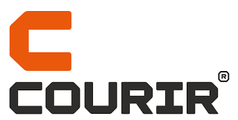
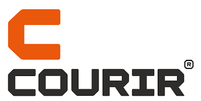

Projets de build
Descamps
CMS : Proximis
Il s’agit du premier projet sur lequel j’ai été intégré en arrivant dans l’entreprise pour mon alternance. Il m’a permis de prendre en main le développement front-end à travers la réalisation de petites tâches variées, ainsi qu’une initiation à la création de templates d’e-mails.
Un défi m’avait été fixé : atteindre un niveau suffisant en front-end avant la fin du projet (environ 4 mois) pour pouvoir être affecté à d’autres projets en tant que développeur front. Dans le cas contraire, je devais retourner au back-end, comme initialement prévu. Ce défi a été relevé avec succès.
Ce projet a également été l’occasion de découvrir le fonctionnement interne de l’entreprise : méthodes agiles avec Jira, gestion du versioning avec Git, préparation et participation aux démonstrations client.
Agnes. B
CMS : Proximis
Ce deuxième projet m’a permis de monter en compétence avec des tâches plus complexes, comme la mise en place des cartouches sur les pages listing produits (PLP) ou encore la réalisation des pages produit détaillé (PDP). J’y ai approfondi mes connaissances en développement front-end, tout en découvrant et en me familiarisant avec le CMS Proximis.
C’est un projet qui m’a accompagné sur le long terme : après la phase de développement initiale, nous avons continué à en assurer la maintenance. J’ai donc régulièrement réalisé des modifications ponctuelles dessus au fil des années.
dugasclubexpert
CMS : Proximis
Ce dernier projet de mon alternance s’inscrivait dans la continuité du projet précédent (Agnès b.), avec une différence importante : j’étais cette fois pleinement considéré comme un développeur front-end à part entière, et non plus comme un assistant.
J’ai bénéficié de davantage de liberté et d’autonomie, ce qui m’a permis d’apporter mes idées, notamment sur certains choix liés à l’expérience utilisateur. J’ai également pu avoir un impact plus direct dans les échanges avec le client.
Malheureusement, pour des raisons inconnues, le site a été clôturé en début d’année. J’ai toutefois mis à disposition une archive de la version en ligne de l’an dernier, afin de pouvoir en montrer un aperçu.
Aurep
CMS : Drupal
Il s’agit de mon premier projet après la fin de mon alternance, réalisé avec Drupal. J’avais déjà eu l’occasion de travailler avec ce CMS auparavant, principalement sur des tâches de support sur divers projets, mais c’était la première fois que je participais à un projet dès son tout début.
J’ai notamment été impliqué dès l’étape de vérification des maquettes avec le designer, afin d’évaluer la faisabilité technique du projet. Il s’agissait d’un site purement informatif, sans fonctionnalité e-commerce, avec un budget plus restreint que ceux sur lesquels j’avais travaillé jusque-là. Cela en a fait une expérience différente, avec des besoins spécifiques et une approche de travail adaptée aux contraintes du projet.
Guinot
CMS : Sylius avec contentful
Ce projet a marqué ma première expérience avec Sylius au sein d’Emakina. J’étais ravi d’y être affecté, car c’était un véritable défi : aucun membre de l’équipe n’avait encore travaillé avec ce CMS, et nous avons donc dû tout apprendre au fur et à mesure du développement.
En plus de Sylius, nous avons utilisé Contentful pour la gestion des pages, ce qui a représenté une autre nouveauté à assimiler. Le référent côté client étant un ancien développeur, cela a apporté une dynamique particulière : les échanges étaient plus fluides et techniques, ce qui a grandement facilité la collaboration.
Pour ma part, en plus de diverses tâches comme l’intégration de listes de produits (notamment sur la page d’accueil) et de blocs de contenu, je me suis particulièrement investi sur la partie géolocalisation des instituts. Ce fut un véritable chantier pour moi, car je découvrais l’API Google Maps et devais gérer tous les besoins spécifiques du client sur cette fonctionnalité, qui était un élément clé du site.
Le projet a été une réussite : près de trois ans après sa mise en ligne, le site est resté quasiment inchangé, preuve de sa solidité et de sa qualité.
Kids Around
CMS : Salesforce
Ce dernier projet chez Emakina avait une particularité : il s’agissait d’un nouveau changement de CMS, avec l’utilisation de Salesforce. Au sein de l’équipe front-end, nous étions trois, mais j’étais le seul à qui l’on avait laissé quelques semaines pour m’auto-former en amont.
J’ai commencé par étudier la documentation et m’exercer sur une sandbox, puis j’ai renforcé ma maîtrise en assurant du support sur un autre projet basé sur Salesforce (le site Courir). Cette phase de formation m’a permis, par la suite, d’accompagner mes collègues et de leur transmettre mes connaissances sur Salesforce pendant toute la phase de développement.
Ce projet a été très enrichissant, car il m’a permis d’endosser un rôle de lead front-end, avec davantage de responsabilités et une vraie implication technique et humaine dans la réussite du projet.
Le tertre camillac
CMS : Wordpress
Projet réalisé en dehors d’Emakina, durant ma période de recherche d’emploi, pour un petit domaine viticole du Blayais. J’avais jusqu’alors très peu manipulé WordPress, uniquement lors de tests techniques passés en entretien.
Il s’agissait donc de mon premier projet concret avec ce CMS. Bien que modeste, ce projet a été très formateur pour moi, et le résultat a pleinement satisfait le commanditaire. Une belle expérience, à la fois technique et humaine.
Interaction de support
Nike PWA
Vue.JS
Ce projet interne à Nike, exclusivement développé pour un format mobile, a marqué mes premiers pas avec Vue.js. Même s’il ne s’agissait que de petites retouches ponctuelles, c’était une première prise en main très enrichissante.
À l’époque, je n’avais aucune connaissance de Vue.js, mais ce projet m’a permis de découvrir un outil à la fois moderne et puissant, que j’ai appris à apprécier par la suite, même s’il était malheureusement peu utilisé chez Emakina.
Étant donné qu’il s’agit d’un projet interne à Nike, je ne peux ni en partager de captures d’écran ni fournir de lien vers une version en ligne.
Expanscience
CMS : Drupal
Ce fut l'un de mes premiers projets en support, qui m’a permis de me former à Drupal et de découvrir le fonctionnement du support technique. J’y ai réalisé diverses tâches, allant de la création de nouveaux blocs à la refonte de certains éléments, comme la page d’accueil.
Ce projet était déjà en phase de support avant mon arrivée, et il y est resté pendant toute la durée de mon engagement. Une expérience très formatrice, qui m’a donné un bon aperçu des enjeux et des exigences du support à long terme.
ATPS
Symphony
Ce projet était initialement géré par un développeur back-end à Emakina, qui avait quelques connaissances en front-end, mais faisait souvent appel à moi pour les tâches plus complexes en front. J’ai notamment participé à la refonte de la page d’accueil.
Le projet utilisait Angular, ce qui m’a permis de poser mes premières bases avec ce framework. J’ai pu avancer dans cette découverte grâce au soutien de mon collègue, qui avait déjà de l’expérience avec Angular.
Courir
CMS : Salesforce
Sur ce projet, j’ai d’abord apporté mon soutien à l’équipe en place, tant pour aider que pour m’auto-former, avant de passer sur un autre projet où j’étais le seul front-end formé sur Salesforce, avec la mission de partager mes connaissances avec l’équipe.
Sur Courir, mes tâches ont été principalement axées sur le support technique, en particulier la manipulation du back-office, ainsi que quelques petites tâches front-end, ce qui m’a permis de me familiariser avec la hiérarchie des dossiers et les spécificités de ce type de projet.
 

Orange réseau
CMS : Drupal
Ce projet de support a été l'un de ceux qui m'a pris le plus de temps, car les clients étaient très actifs, mais souvent peu formés à la gestion de leur site. De nombreuses demandes concernaient des tâches simples qu'ils auraient pu réaliser eux-mêmes.
J’ai donc pris l’initiative de former les clients en leur montrant comment effectuer ces modifications. J’ai réalisé les tâches en partage d'écran avec eux et fourni une documentation détaillée, afin qu'ils puissent, à l'avenir, effectuer ces changements de manière autonome.